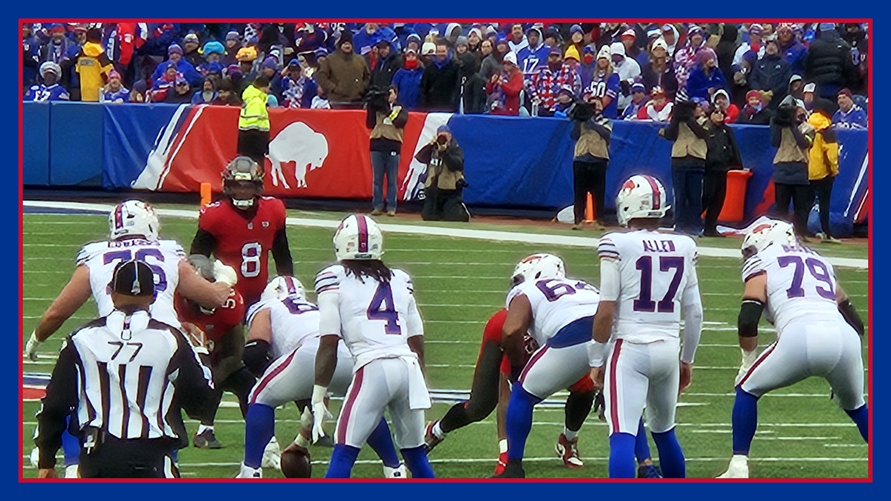

The Card: Buffalo is -3 over Kansas City on Thanksgiving night, the total fell five points, and five Bills are questionable
Buffalo is a 3-point home favorite over Kansas City tonight (8:20 PM ET, Highmark Stadium, NBC) with the total down to 45.5 from a 50.5 open, per NBC Sports and Sports Illustrated. Wednesday ruled Kenneth Walker III out for a third straight game, per Reuters, and left five Buffalo Bills — Benford, Kincaid, Torrence, Williams and Sanders — questionable, per the Bills' official report. The Card prices Thanksgiving night.

Welcome back to The Card — I'm Matt Manzella, and this is the one desk on this site where we talk about the numbers that move money. This is Partner Content, presented by Kalshi, the regulated exchange where you trade on game outcomes instead of betting against a house. The rule here has not changed: every number below traces to a named source, every position gets logged in public, and there are no locks and no guarantees. Tonight's game is the Kansas City Chiefs (8-2) at the Buffalo Bills (9-1), Thursday, Nov. 26 at 8:20 PM ET at Highmark Stadium on NBC — the first Thanksgiving home game in Bills history, with the AFC's No. 1 seed on the table. And the most honest price in this matchup is not the spread. It is the total, and it has fallen five points.
Start with the headline prices. Buffalo is a 3-point home favorite with a game total of 45.5, per NBC Sports' Thanksgiving Day odds page, which lists the moneyline at Bills -151 and Chiefs +127 via DraftKings. That total is the story: the game opened at 50.5, per Sports Illustrated's opening-odds report, and the opening spread was Buffalo -2.5, per USA TODAY's picks page. A spread that barely moves while a total sheds five points is the market telling a specific story — it still believes this is a close game between equals, but it no longer believes it gets played in the 50s. On Kalshi, Buffalo is priced at 58 percent to win with the total set at 47.5, per Covers' Nov. 26 morning update — a higher total than the sportsbooks are hanging, and a gap worth noticing before kickoff.
Wednesday's final injury report is the first reason the total fell. Buffalo listed five players as questionable, per the Bills' official injury report: cornerback Christian Benford (groin), tight end Dalton Kincaid (thumb/ankle), right guard O'Cyrus Torrence (ankle), linebacker Dorian Williams (calf) and defensive lineman T.J. Sanders (shoulder) — all five limited in practice this week after Benford and Kincaid missed the Miami game entirely. The cleared list matters just as much: edge rusher Greg Rousseau (back), defensive tackle Ed Oliver (oblique), right tackle Spencer Brown (back) and safety Damar Hamlin (toe/neck) were full participants and carry no game designation, per the same official report. Buffalo's pass rush and its starting right tackle are whole. Its top corner and its leading receiver are coin flips until inactives post, about 90 minutes before kickoff.
Kansas City's report moved the number, too. The Chiefs ruled out running back Kenneth Walker III for the third straight game with a groin injury, the team announced Wednesday, per Reuters. Rookie Emmett Johnson receives his third consecutive start — and he has not played like a backup: Johnson has averaged 103.0 rushing yards and totaled three touchdowns (one rushing, two receiving) in Walker's absence, per Reuters. Kansas City also ruled out right tackle Jaylon Moore (ankle) and defensive tackle Omarr Norman-Lott (knee), and listed tight end Noah Gray (ribs) and defensive tackle Peter Woods (neck) as questionable after both practiced fully, per the Chiefs' final report via the Bills' official site. Quarterback Patrick Mahomes (knee/right elbow), wide receiver Rashee Rice (knee) and right guard Trey Smith (concussion) carry no designation and will play, per the same report.
The matchup underneath the prices is a streak fight. Buffalo's defense has gone 43 consecutive opponent drives and 15 consecutive quarters without allowing a touchdown, per the Democrat and Chronicle — built, as this site's Film Room graded honestly on Tuesday, against a run of backup quarterbacks. Mahomes arrives with 13 touchdown passes and no interceptions across his last four games, per NFL on CBS via Bills Wire. Something breaks tonight. On the ground, Kansas City's run defense ranks 10th in the league at 95.5 yards allowed per game, per the Democrat and Chronicle — but it has not faced James Cook, who needs 75 rushing yards and a rushing touchdown tonight to tie Terry Allen's all-time record of 10 straight games hitting both marks, per Buffalo Rumblings. Cook behind a cleared Spencer Brown, against a Chiefs interior missing Norman-Lott and sweating Woods, is Buffalo's cleanest path to controlling this game — and shortening it.
Then there is the third opponent, and it is the other reason the total fell five points. Tonight's forecast calls for rain, temperatures in the mid-30s and wind gusts up to 24 mph at Highmark Stadium, per Covers' game-day update, and earlier National Weather Service discussion via the Democrat and Chronicle put possible gusts at 35 to 40 mph with 1 to 2 inches of rain across western New York. Rain and wind do not stop Mahomes or Josh Allen. They do slick the football, shorten throws, punish ball security and reward the team that can hand off 30 times and hold on. That team, on paper, is Buffalo — second in the NFL at 31.3 points per game, per the Democrat and Chronicle, but built this month on Cook and a defense that does not allow touchdowns.
Here is my card for tonight, in order. One: Buffalo to win is the lean, but at 58 percent on Kalshi and -151 at the books there is no bargain in it — the market already believes, so I am not paying full price to agree with it. Two: the spread at Buffalo -3 is a small lean toward the home team, and it is entirely an inactives bet. Rousseau, Oliver and Brown being cleared is real; if Benford and Kincaid are both active, -3 at home in the rain is a fair price for the AFC's top seed. If both sit, I pass — a rookie-corner secondary against Mahomes is not a 3-point favorite I want. Three: the total is a discipline test. Under 50.5 was the play on Monday; at 45.5, per NBC Sports, that value is gone, and chasing a number five points late is how this desk loses money. The only total I would touch is the under at Kalshi's 47.5, per Covers — two full points above the book number, in the rain, with a Buffalo team that wants this game played in the mud. Trade the inactives, not the rumors.
The Card is Partner Content presented by Kalshi. Trade this game and every game at kalshi.com/r/BNC — free $55 when you trade $25, code BNC. You must be 18 or older to trade on Kalshi. Prices move, nothing in this column is a guarantee, and this is analysis and entertainment, not financial advice. Trade only what you can afford to lose. Tonight's inactives, about 90 minutes before the 8:20 PM ET kickoff, are the last word on Benford, Kincaid, Torrence, Williams, Sanders, Gray and Woods — everything above is priced to change when they post. Happy Thanksgiving, Bills Mafia. Go Bills — and get tonight's inactives and the full Chiefs fallout in your inbox with The BNC Blitz.